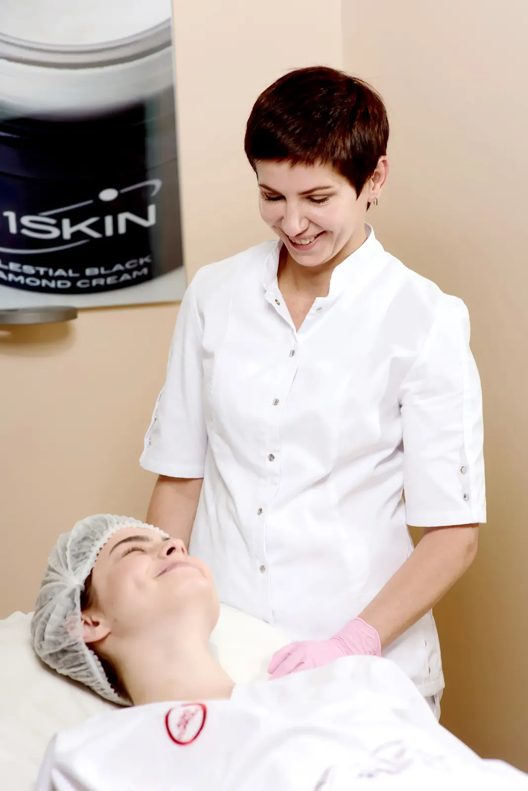

Короткий ответ: да, особенно если вы проходите косметологические процедуры, принимаете ретиноиды или едете в горы. Зимой в Москве солнце слабое, но ультрафиолет никуда не девается, а снег отражает его и увеличивает нагрузку на кожу.
Чем зимнее солнце отличается от летнего
Ультрафиолет бывает двух типов, важных для кожи. Лучи B (UVB) вызывают ожог; зимой в Москве их мало, поэтому обгореть в городе почти невозможно. Лучи A (UVA) проникают глубже, отвечают за фотостарение и пигментацию. Их интенсивность в течение года меняется меньше, и они проходят через облака и стекло.
Поэтому зимой вы не обгорите, но кожа всё равно получает свою дозу UVA, особенно если много времени проводите у окна или за рулём.
Кому SPF зимой нужен обязательно
- После пилингов, лазерных процедур и фотоомоложения: кожа становится чувствительнее к свету.
- Если вы пользуетесь ретинолом или кислотами.
- При склонности к пигментации и мелазме.
- Во время курса лазерной эпиляции.

Горы и снег
Свежий снег отражает до 80% ультрафиолета, а с высотой интенсивность излучения растёт. На горнолыжном курорте нужен крем SPF 50 с защитой от UVA и UVB, его обновляют каждые два часа и после того, как вытерли лицо. Не забывайте про губы и уши.
Как выбрать средство на зиму
- Город: лёгкий увлажняющий крем с SPF 30 вместо дневного или поверх него.
- Сухая кожа: кремовые текстуры с питательными компонентами, которые не сушат в мороз.
- Горы: SPF 50 с пометкой о защите от UVA, водостойкий.
- Под макияж: солнцезащитная основа или тональное средство с SPF. Но одного тонального обычно недостаточно: его наносят слишком тонким слоем.
Сколько наносить
Чтобы защита соответствовала цифре на упаковке, средства нужно примерно половину чайной ложки на лицо и шею. Большинство людей наносит меньше. Если крем ложится слишком плотно, лучше два тонких слоя, чем один «экономный».
Вопросы и ответы
Можно ли обгореть зимой в Москве?
В городе — маловероятно: лучей B, которые вызывают ожог, зимой мало. В горах и на снегу — да.
Хватит ли SPF в тональном креме?
Обычно нет: тональное средство наносят слишком тонким слоем. Лучше отдельный крем с SPF под макияж.
Нужен ли SPF, если я весь день в офисе?
Если стол у окна или вы пользуетесь ретиноидами, кислотами, недавно делали пилинг — да. Лучи A проходят через стекло.
Источники
- Всемирная организация здравоохранения (ВОЗ): Ultraviolet radiation, факты об отражении УФ снегом
- Американская академия дерматологии (AAD): Sunscreen FAQs
- Skin Cancer Foundation: Winter sun protection